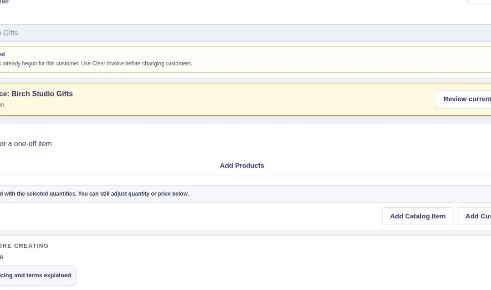
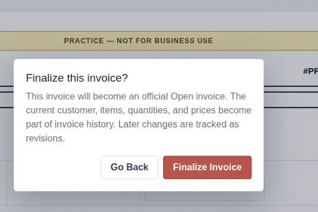

Sales History
Find and manage saved Invoices and Receipts.
Find a document
Open Sales History, search by customer or document details, or use Filters & Sort.
Watch: Draft and finalize an invoice
Recorded in Practice — Sample Data. Follow along in Practice without changing real Business records, or switch to Business to enter your own information.



Draft and finalized Invoices
Open a Draft to edit or delete it. Finalize when ready. Finalized invoices keep their history and cannot reuse voided document numbers.
Revise or void
Use the available revision or Void action. Voiding preserves a record of the document.
Payments
Open an Invoice and choose Record Payment to apply full or partial payments.
Print or email
Print or save a PDF of a supported document. Email is available on finalized Invoices and completed Receipts.